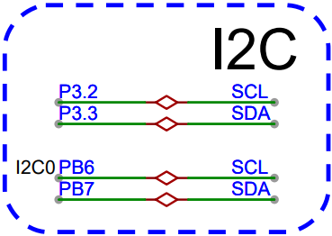
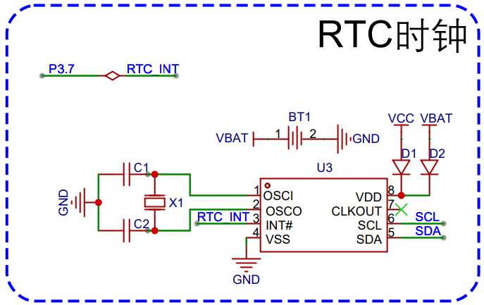

<!DOCTYPE lake>
<h2 data-lake-id="EHnqm" id="EHnqm"><span data-lake-id="u1c939d03" id="u1c939d03">学习目标</span></h2><ol list="ue172bf26"><li data-lake-id="uf4942195" fid="ube7e2de6" id="uf4942195"><span data-lake-id="u68e5cc63" id="u68e5cc63">掌握移植方法</span></li><li data-lake-id="uea9ceeb2" fid="ube7e2de6" id="uea9ceeb2"><span data-lake-id="u2414d04c" id="u2414d04c">掌握测试方法</span></li></ol><h2 data-lake-id="laH8r" id="laH8r"><span data-lake-id="u86f56386" id="u86f56386">学习内容</span></h2><h3 data-lake-id="EBzXX" id="EBzXX"><span data-lake-id="uc7dd3c37" id="uc7dd3c37">需求</span></h3><p data-lake-id="uf1bd9d6e" id="uf1bd9d6e"><span data-lake-id="u000690b6" id="u000690b6">开发板中的PCF8563的RTC时钟设置和读取。</span></p><p data-lake-id="u66d5b4cf" id="u66d5b4cf"></p><h3 data-lake-id="s6TYw" id="s6TYw"><span data-lake-id="ub8ab3a58" id="ub8ab3a58">开发流程</span></h3><ol list="uadb6fa36"><li data-lake-id="ub4ed60cc" fid="ua40f130d" id="ub4ed60cc"><span data-lake-id="u0521b0e3" id="u0521b0e3">移植驱动</span></li><li data-lake-id="ud0e5bed6" fid="ua40f130d" id="ud0e5bed6"><span data-lake-id="u926d8a8c" id="u926d8a8c">修改I2C实现</span></li><li data-lake-id="uc996c112" fid="ua40f130d" id="uc996c112"><span data-lake-id="u45b66524" id="u45b66524">测试功能</span></li></ol><h4 data-lake-id="HImHz" id="HImHz"><span data-lake-id="u6b2dc06d" id="u6b2dc06d">移植驱动</span></h4><ol list="u0716c5e8"><li data-lake-id="u472a4b83" fid="u2e811317" id="u472a4b83"><span data-lake-id="uc52f9dc9" id="uc52f9dc9">将</span><code data-lake-id="uef22350c" id="uef22350c"><span data-lake-id="u73e65c34" id="u73e65c34">PCF8563.h</span></code><span data-lake-id="u0f767844" id="u0f767844">和</span><code data-lake-id="uedb77e17" id="uedb77e17"><span data-lake-id="u2860f5d8" id="u2860f5d8">PCF8563.c</span></code><span data-lake-id="u1ee1ca4b" id="u1ee1ca4b">拷贝到</span><code data-lake-id="ua4c59c10" id="ua4c59c10"><span data-lake-id="u362d881d" id="u362d881d">Hardware</span></code><span data-lake-id="u95b1e394" id="u95b1e394">的</span><code data-lake-id="u1500346d" id="u1500346d"><span data-lake-id="u7b9358c6" id="u7b9358c6">pcf8563</span></code><span data-lake-id="udee584bc" id="udee584bc">目录中。</span></li><li data-lake-id="u46ef09dd" fid="u2e811317" id="u46ef09dd"><span data-lake-id="u9f522835" id="u9f522835">将</span><code data-lake-id="u3edc4faa" id="u3edc4faa"><span data-lake-id="u7327b87e" id="u7327b87e">Hardware/pcf8563</span></code><span data-lake-id="u36160da9" id="u36160da9">目录添加到</span><code data-lake-id="ub32322f3" id="ub32322f3"><span data-lake-id="u17fbff6d" id="u17fbff6d">include path</span></code></li><li data-lake-id="u421cf089" fid="u2e811317" id="u421cf089"><span data-lake-id="u10d58d50" id="u10d58d50">在</span><code data-lake-id="u3ca7ee00" id="u3ca7ee00"><span data-lake-id="u2e131598" id="u2e131598">keil</span></code><span data-lake-id="u2051a013" id="u2051a013">中，将</span><code data-lake-id="uaaaf0a6d" id="uaaaf0a6d"><span data-lake-id="uc42ab2e1" id="uc42ab2e1">PCF8563.h</span></code><span data-lake-id="uecd21358" id="uecd21358">和</span><code data-lake-id="u48ea470d" id="u48ea470d"><span data-lake-id="ub9c228d8" id="ub9c228d8">PCF8563.c</span></code><span data-lake-id="u290e9d02" id="u290e9d02">添加到</span><code data-lake-id="u99c2d22e" id="u99c2d22e"><span data-lake-id="u04a680f6" id="u04a680f6">Hardware</span></code><span data-lake-id="u81fa5d5f" id="u81fa5d5f">group中。</span></li></ol><h4 data-lake-id="PZ5n6" id="PZ5n6"><span data-lake-id="u56f169e8" id="u56f169e8">修改I2C实现</span></h4><ol list="uc572aa97"><li data-lake-id="u81b40215" fid="ub38a10e9" id="u81b40215"><span data-lake-id="u329e4a66" id="u329e4a66">修改include</span></li></ol><span class="yuque-card-unsupported">[codeblock]</span><span class="yuque-card-unsupported">[codeblock]</span><ol list="u653d2e89" start="2"><li data-lake-id="ucea0e02f" fid="uf929c73c" id="ucea0e02f"><span data-lake-id="ub9110afc" id="ub9110afc">读写操作修改</span></li></ol><span class="yuque-card-unsupported">[codeblock]</span><span class="yuque-card-unsupported">[codeblock]</span><h4 data-lake-id="v5uLn" id="v5uLn"><span data-lake-id="uf3e7959b" id="uf3e7959b">测试功能</span></h4><ol list="u56b591d3"><li data-lake-id="u62a2aa76" fid="uce3bebc9" id="u62a2aa76"><span data-lake-id="uadaaa673" id="uadaaa673">初始化</span></li></ol><span class="yuque-card-unsupported">[codeblock]</span><ol list="u7c884a44" start="2"><li data-lake-id="udad27a5b" fid="u8910efa4" id="udad27a5b"><span data-lake-id="u6490d80b" id="u6490d80b">设置时间</span></li></ol><span class="yuque-card-unsupported">[codeblock]</span><ol list="ue835f9d8" start="2"><li data-lake-id="u1287c7a3" fid="u123ec461" id="u1287c7a3"><span data-lake-id="u6ba3872c" id="u6ba3872c">读取时间</span></li></ol><span class="yuque-card-unsupported">[codeblock]</span><h3 data-lake-id="t6VLs" id="t6VLs"><span data-lake-id="u0c134777" id="u0c134777">练习题</span></h3><ol list="u564c70ed"><li data-lake-id="u1d149b22" fid="u22297f50" id="u1d149b22"><span data-lake-id="u9afe6a41" id="u9afe6a41">实现PCF8563的移植</span></li></ol>